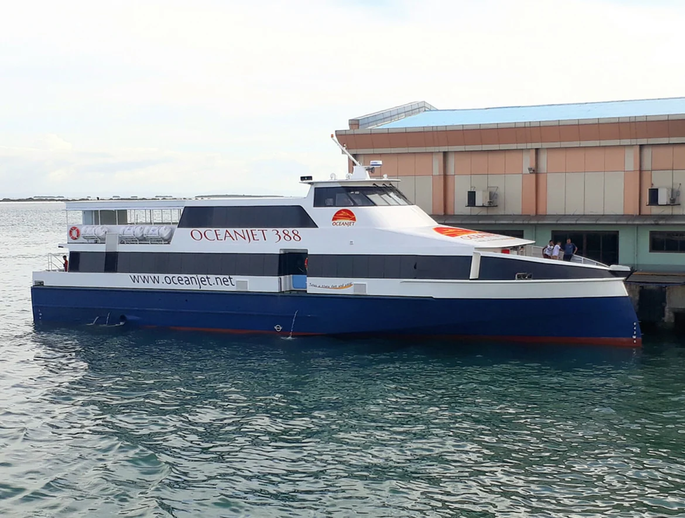
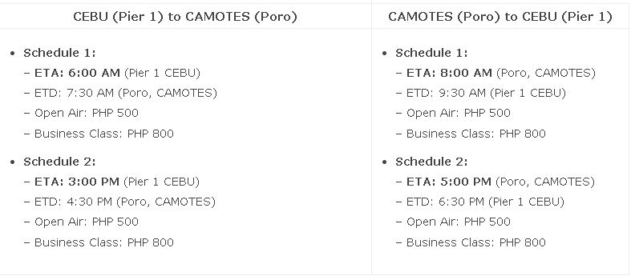

The Ultimate Travel Guide to Camotes Island (2022)
UPDATE April 1 2022: Oceanjet has continued their Cebu to Camotes trip.
You can also take the Danao to Camotes ferry by Jomalia Shipping.

You have three (3) options going to/from Camotes Islands:
OPTION 1: OCEANJET FAST CRAFT
– Travel Time: 1 hour and 30 minutes
– Cebu Port: Pier 1, Cebu City
– Camotes Port: Poro, Camotes
– Advantages: Take this option if you want to arrive faster, and you live/stay near Pier 1 or SM City Cebu or you’re from Southern Cebu.
OPTION 2: JOMALIA RORO/EXPRESS
– Travel Time: 2 hours
– Cebu Port: Danao City Port
– Camotes Port: Consuelo, Camotes
– Advantages: Take this option if you want to save 50% on transportation, if you’re willing to travel or you’re from/near Danao City.
OPTION 3: JOMALIA FAST CRAFT
– Travel Time: 1 hour and 15 minutes
– Cebu Port: MACTAN WHARF of Island Central Mactan Mall
– Camotes Port: Consuelo, Camotes
– Advantages: Take this option if you want to arrive faster, and you live/stay near Mactan.
